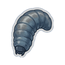
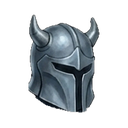
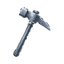
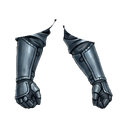
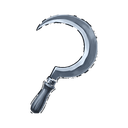
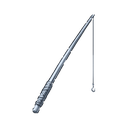
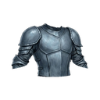
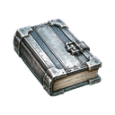

| Mezarlık Gulyabanisi | Sv 11 |  Demir Dinamiti T2 Demir Dinamiti T2  Yükseltme Taşı T2 Yükseltme Taşı T2  Çelik Yemi T3  Çelik Miğfer T3  Çelik Kazma T3 |
| Huzursuz Ruh | Sv 12 | Demir Dinamiti T2 Yükseltme Taşı T2  Çelik Eldiven T3  Çelik Orak T3  Çelik Tohumu T3 Çelik Tohumu T3 |
| Lanetli Zırh | Sv 13 | Yükseltme Taşı T2  Çelik Çizme T3 Çelik Çizme T3  Çelik Dinamiti T3 Çelik Dinamiti T3  Çelik Olta T3 |
| Banşi | Sv 14 | Yükseltme Taşı T2  Çelik Göğüslük T3 Çelik Dinamiti T3 |
| Liç Müridi | Sv 15 | Yükseltme Taşı T2 Çelik Dinamiti T3  Çelik Pantolon T3 Çelik Pantolon T3  Çelik Sadağı T3 Çelik Sadağı T3  Çelik Kalkan T3 Çelik Kalkan T3  Çelik Kitabı T3  Çelik Asa T3 Çelik Asa T3  Çelik Kılıç T3 Çelik Kılıç T3  Çelik Topuz T3 Çelik Topuz T3  Çelik Yay T3 Çelik Yay T3 |